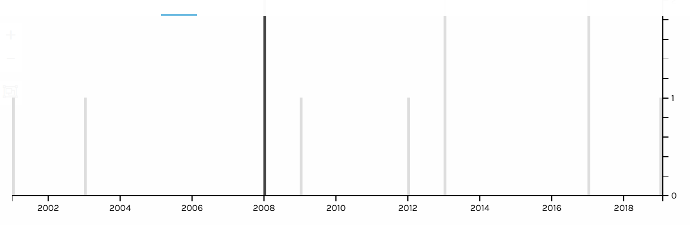
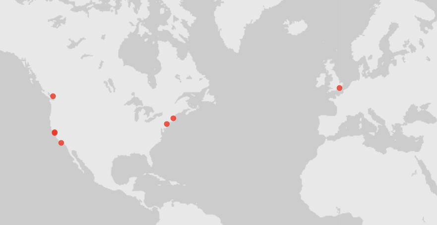
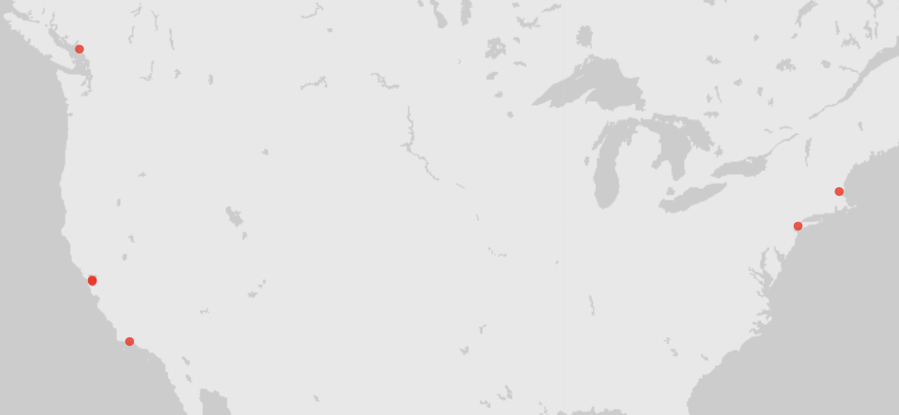
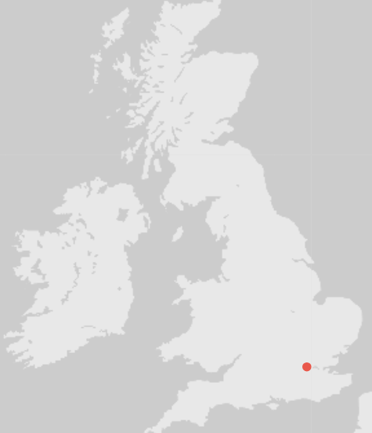

These books contain contents of the process of art in larger medias like animation
for cartoons and comics. The books on animation range from the early forms of
development, how to start animations, and the form of art used for the
animation.
Shelf NC1764-1766
Timeline

Within the timeline, majority of the books had been published around
the 2000s, with 6 of those books being published in the 2010s
Locations of Publications

Geographical locations of where the books were
published

Closer look at the United States to show which state had
the book published

Closer look at the United Kingdom to show where the books
were published
Majority of the books published were done in the United States coastline
states or Southeast United Kingdom